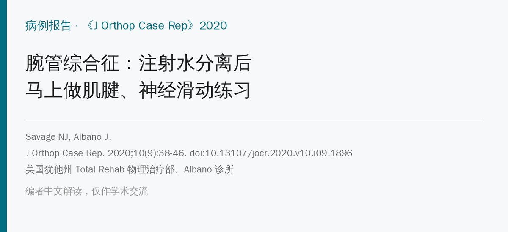
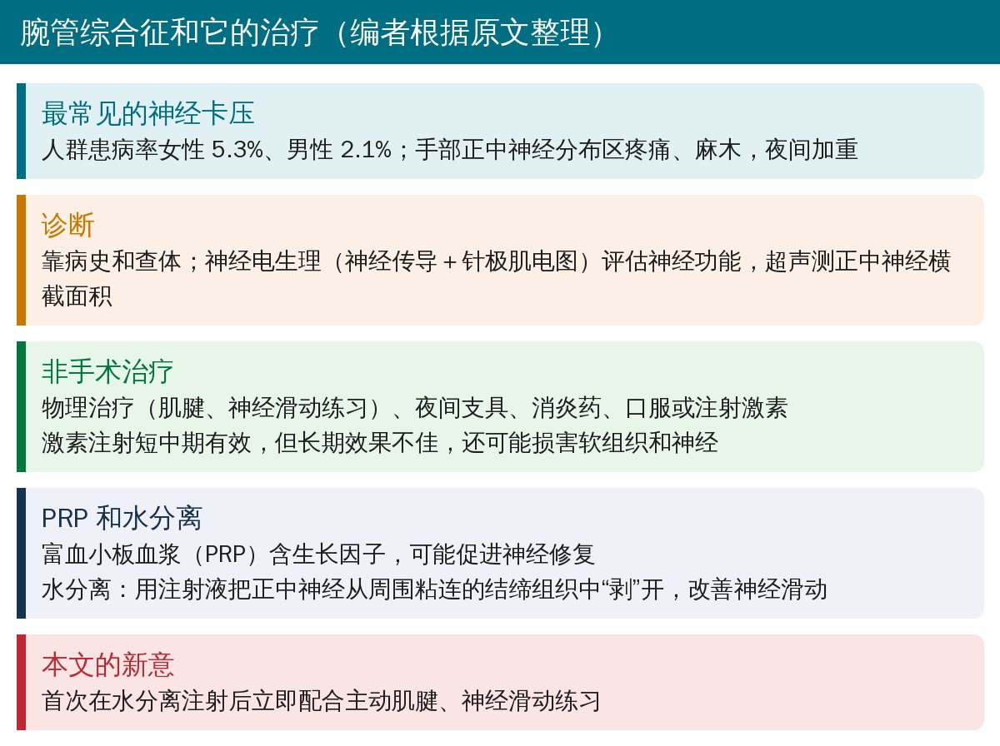
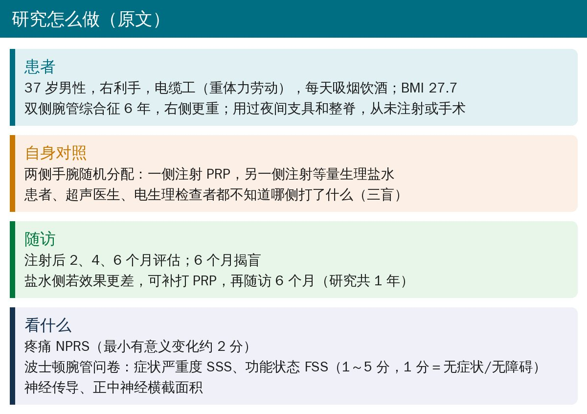
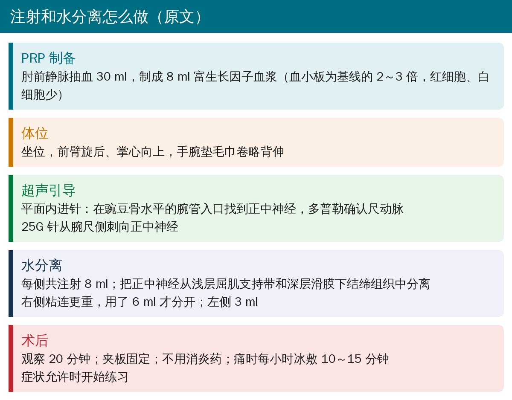
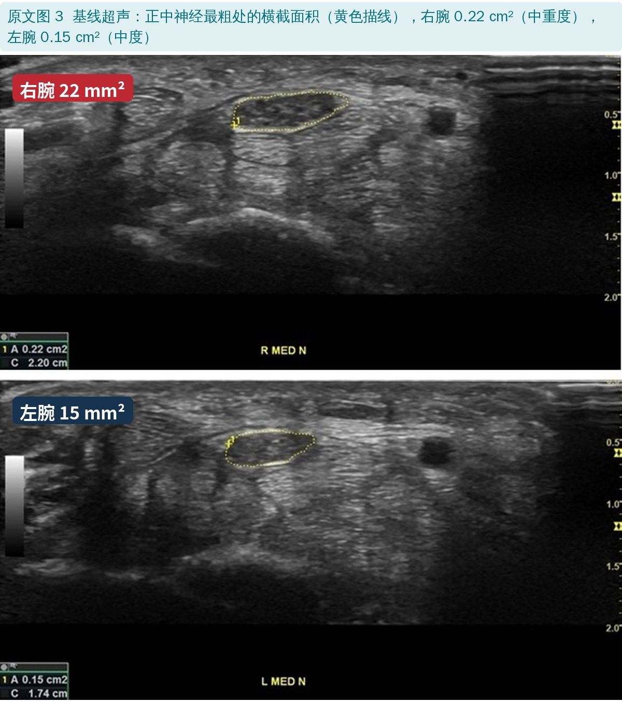
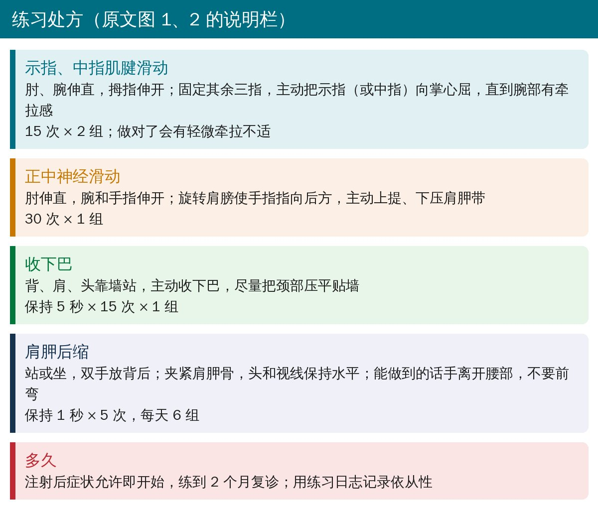
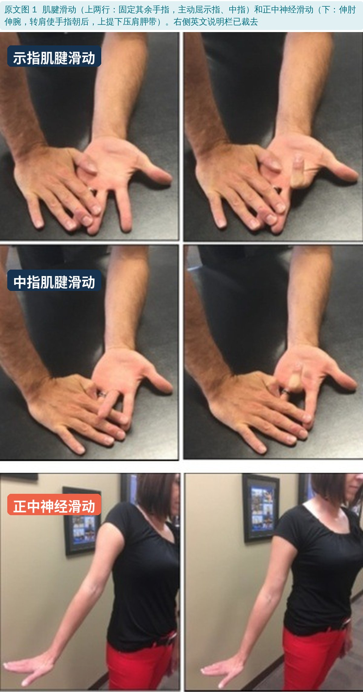
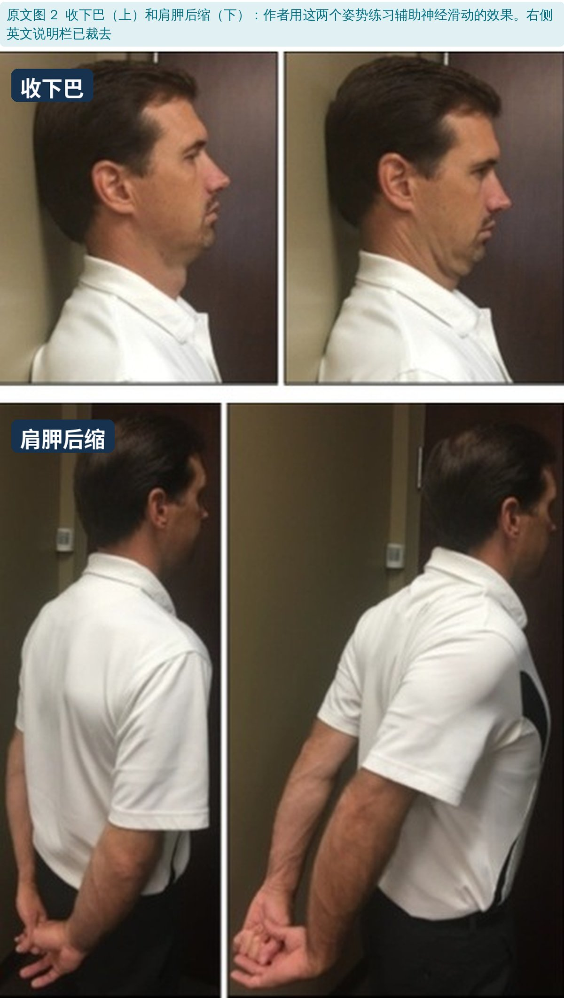
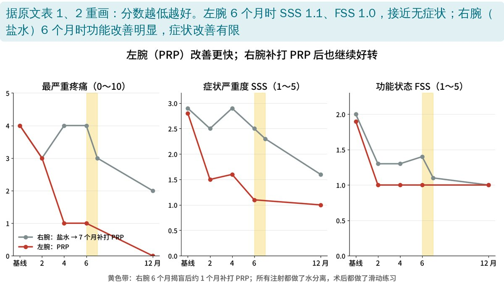
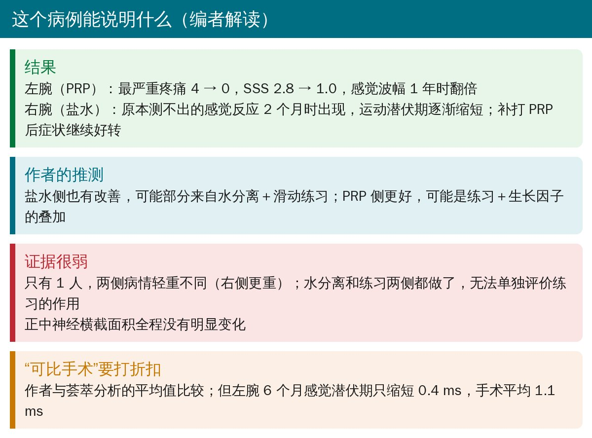

🔖原文信息（编者中文重排）
📚 文献信息
▪ Savage NJ, Albano J. Marrying Tendon and Nerve Gliding Exercises with Hydrodissection Following Injection for Carpal Tunnel Syndrome – A New Treatment Approach? J Orthop Case Rep. 2020;10(9):38-46. doi:10.13107/jocr.2020.v10.i09.1896
▪ 作者单位：美国犹他州 Total Rehab 物理治疗部、Albano 诊所
▪ 文章类型：病例报告（1 例双侧腕管综合征，两侧手腕自身对照，随访 1 年）
• 超声引导下腕管注射时同时做正中神经水分离，把神经从粘连的结缔组织中“剥”开，注射后立即开始主动肌腱、神经滑动练习
• 一位双侧腕管综合征患者，两侧随机打 PRP 或生理盐水：PRP 侧疼痛、症状、功能改善更快；盐水侧也有明显改善
• 盐水侧 6 个月后补打 PRP，1 年时两侧症状和神经功能都比基线好，全程无不良反应
• 但只有 1 人，水分离和练习两侧都做了，练习本身的作用无法单独评价

🔖腕管综合征和它的治疗（编者根据原文整理）
腕管综合征患者正中神经周围的滑膜下结缔组织往往增厚、纤维化，神经滑动变差，被认为会让神经更容易受损。水分离就是针对这一点；而肌腱、神经滑动练习本来就是物理治疗的常用手段。作者的想法很直接：刚剥开粘连，就让神经和肌腱动起来。

🔖研究怎么做（原文）

🔖注射和水分离（原文）

🔖原文图 3：基线超声
按作者的分级标准，基线时右腕为“中重度”、左腕为“中度”腕管综合征；水分离时右侧正中神经粘连更重，需要的注射液是左侧的两倍。

🔖练习处方（原文图 1、2 的说明栏，编者翻译）

🔖原文图 1：肌腱滑动和正中神经滑动

🔖原文图 2：收下巴和肩胛后缩
练习在注射后症状允许时就开始，一直做到 2 个月复诊，患者用练习日志记录完成情况。收下巴和肩胛后缩是为了配合近端姿势，帮助神经滑动。

🔖症状评分变化（据原文表 1、2 重画）
原文表 1：右腕（盐水 → 约 7 个月时补打 PRP）
| 基线 | 2 月 | 4 月 | 6 月 | 1 年 | |
|---|---|---|---|---|---|
| 最严重疼痛 | 4 | 3 | 4 | 4 | 2 |
| 症状 SSS | 2.9 | 2.5 | 2.9 | 2.5 | 1.6 |
| 功能 FSS | 2.0 | 1.3 | 1.3 | 1.4 | 1.0 |
| 感觉潜伏期 ms | 测不出 | 5.5 | 5.5 | 5.5 | 5.5 |
| 感觉波幅 μV | 测不出 | 5.2 | 5.2 | 5.2 | 11 |
| 运动潜伏期 ms | 6.6 | 6.1 | 5.8 | 5.5 | 5.3 |
| 横截面积 mm² | 22 | 22 | 22 | 21 | 21 |
原文表 2：左腕（PRP）
| 基线 | 2 月 | 4 月 | 6 月 | 1 年 | |
|---|---|---|---|---|---|
| 最严重疼痛 | 4 | 3 | 1 | 1 | 0 |
| 症状 SSS | 2.8 | 1.5 | 1.6 | 1.1 | 1.0 |
| 功能 FSS | 1.9 | 1.0 | 1.0 | 1.0 | 1.0 |
| 感觉潜伏期 ms | 4.9 | 4.7 | 4.6 | 4.5 | 4.5 |
| 感觉波幅 μV | 6.2 | 8.3 | 8.9 | 9.5 | 18.4 |
| 运动潜伏期 ms | 4.5 | 4.4 | 4.4 | 4.4 | 4.5 |
| 横截面积 mm² | 15 | 12 | 17 | 16 | 14 |
SSS、FSS 为 1～5 分，1 分表示无症状或无功能障碍。值得注意的是盐水侧：原本测不出的感觉神经反应在 2 个月时出现，运动潜伏期逐渐缩短，功能评分也明显改善。作者认为这可能部分来自水分离加滑动练习。两侧正中神经横截面积全程没有明显变化。

🔖编者解读
• 单个患者，两侧病情轻重不同；没有“只注射、不练习”的对照，练习的贡献无法单独评价
• 作者认为疗效“可与手术相当”，依据是与荟萃分析平均值的比较，属于间接对比
• 优点：三盲、随机分配两侧手腕，电生理和超声检查者各自独立，随访到 1 年
• 右腕补打 PRP 的日期，正文写 2018 年 11 月 2 日，表 1 写 11 月 1 日
• 讨论说本例波士顿问卷基线 46 分、6 个月 20 分，但正文和表格用的都是 1～5 分的平均分
• 腕管注射（尤其是做了水分离）后，可以在症状允许时尽早开始肌腱、神经滑动练习，而不是一味制动
• 肌腱滑动：固定其余手指，单独屈示指、中指；神经滑动：伸肘伸腕、转肩，配合上提下压肩胛带
• 可配合收下巴、肩胛后缩等姿势练习；用日志记录完成情况，便于复诊调整
• PRP、水分离是否值得做，还需要更大样本的研究；本例只能作为思路参考
欢迎关注骨科康复小黄公众号，获取更多物理治疗的专业知识！
📄参考文献：
Savage NJ, Albano J. Marrying Tendon and Nerve Gliding Exercises with Hydrodissection Following Injection for Carpal Tunnel Syndrome – A New Treatment Approach? J Orthop Case Rep. 2020;10(9):38-46. doi:10.13107/jocr.2020.v10.i09.1896
原文以知识共享署名-非商业性使用 3.0（CC BY-NC 3.0）协议开放获取，版权归原作者所有。本文为非商业的学术交流中文解读：原文图 1、2 裁去右侧英文说明栏（内容已译成中文），图 1～3 加了中文标签；评分图由编者根据原文表 1、2 重画；整理卡为编者根据原文撰写。仅供学习交流，如有侵权请联系删除。